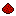

Addons
Ask AIBrowse mods, resource packs, shaders and modpacks from Modrinth.
Say what you are after, like "performance mods", "a skyblock modpack" or "medieval textures". The AI searches Modrinth and picks the best matches for you to add. Your message is sent to Groq.
A modern rendering engine and optimization mod for Minecraft.
View items and recipes in your inventory with one keypress.

Aesthetic technology that empowers the player through mechanical contraptions.
1–20 of 12,345
A modern rendering engine and optimization mod for Minecraft.
View items and recipes in your inventory with one keypress.
Aesthetic technology that empowers the player through mechanical contraptions.
A modern shaders mod for Minecraft compatible with existing OptiFine shader packs.
Real-time mapping in-game or in a web browser as you explore.
Adds food and hunger-related information to the HUD.
Lightweight and modular API providing common hooks and intercompatibility.
Adds a fullscreen map you can browse and zoom, with waypoints and chunk info.